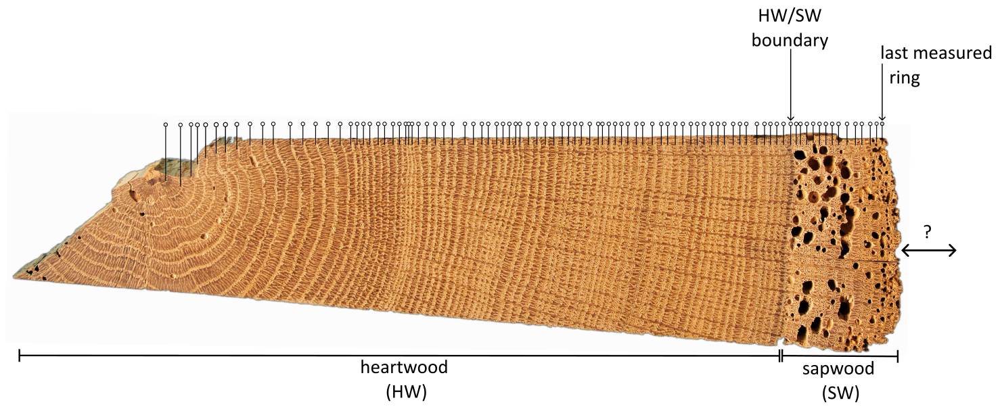
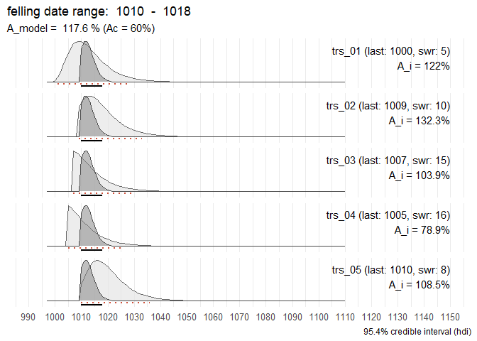
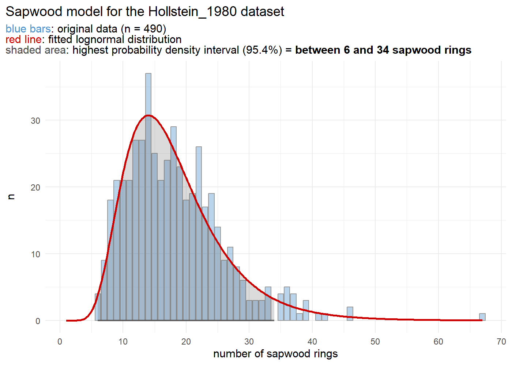
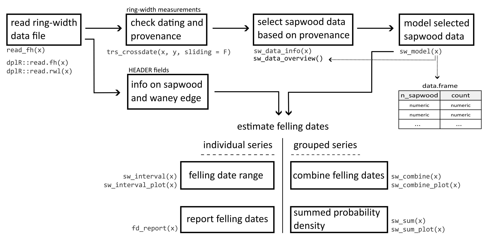

This R-package offers a suite of functions designed to assist dendrochronologists in inferring estimates for felling dates, derived from dated tree-ring series. The presence of partially preserved sapwood (sw) allows to estimate the missing number of sapwood rings, and to report an interval in which the actual felling date (fd) likely falls.

This procedure can be applied to individual series as well as to a collection of timbers.
In cases where it can be assumed that a group of historical timbers were all felled simultaneously (i.e., in the same year), but due to the absence of the bark/cambial zone (waney edge) and the final formed tree ring, this cannot be determined, the preserved sapwood rings can be used to establish a date range for the felling event.
Taking into account the observed number of sapwood rings across all analysed samples and combining them into a single estimate, a more accurate and precise estimation of the felling date year for the group of timbers under study is likely to be obtained.
An additional function offers a tool for summing sapwood probability distributions, comparable to ‘summed probability densities (SPD)’ commonly applied to sets of radiocarbon (14C) dates.
Installation
You can install the latest release of fellingdater from GitHub or R-universe:
# install.packages("pak")
pak::pak("ropensci/fellingdater")
install.packages("fellingdater", repos = "https://ropensci.r-universe.dev")Basic example
In the following example the combined felling date range for a set of five dated tree-ring series is computed:
library(fellingdater)
## a data set where all series have partially preserved sapwood:
trs_example1
#> series last n_sapwood waneyedge
#> 1 trs_01 1000 5 FALSE
#> 2 trs_02 1009 10 FALSE
#> 3 trs_03 1007 15 FALSE
#> 4 trs_04 1005 16 FALSE
#> 5 trs_05 1010 8 FALSE
sw_combine(trs_example1, plot = TRUE)
The light grey distributions represent the probability density function of the felling date range for each individual series. The dark grey distribution is the combined estimate for a common felling date.
The sapwood model used in the example above to estimate the felling date range, was published by Hollstein (1980):
sw_model("Hollstein_1980", plot = TRUE)
Getting started
You can find an overview of the main functions and sapwood datasets distributed with the package in the documentation.
Some practical examples are provided in the Get started vignette.
The workflow
The fellingdater-package allows to fully document the methodology to establish a felling date – for a single timber or a group of timbers – making the whole procedure reproducible. It assists in building standardized workflows when applied to large datasets of historical tree-ring series originating from geographically distinct regions. The package is designed to offer several functions related to each step in the (generalized) workflow when working with tree-ring series from (pre-)historical objects or constructions.

Motivation & citation
This package was developed during the analysis of a large data set of tree-ring series originating from medieval timber constructions in Bruges (Belgium). The results of this study were published in Dendrochronologia.
Please cite this paper when using the fellingdater package:
Kristof HANECA
, Vincent DEBONNE, Patrick HOFFSUMMER 2020. The ups and downs of the building trade in a medieval city: tree-ring data as proxies for economic, social and demographic dynamics in Bruges (c. 1200 – 1500). Dendrochronologia 64, 125773.
https://doi.org/10.1016/j.dendro.2020.125773
To refer to the current version of the package:
Haneca K (2024). fellingdater: an R-package to facilitate the organisation, analysis and interpretation of tree-ring data from wooden heritage objects and structures. R package, version 1.0.1, https://docs.ropensci.org/fellingdater.
Comments and contributions
Please report any issues or bugs here: https://github.com/ropensci/fellingdater/issues.
Get citation information for
fellingdaterin R typingcitation(package = 'fellingdater').Please note that the
fellingdaterpackage is released with a Contributor Code of Conduct. By contributing to this project, you agree to abide by its terms.